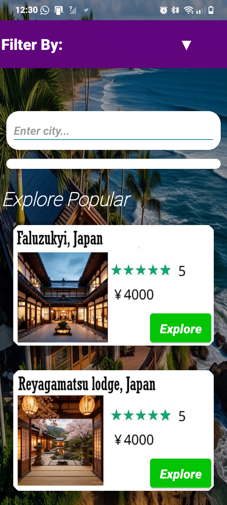
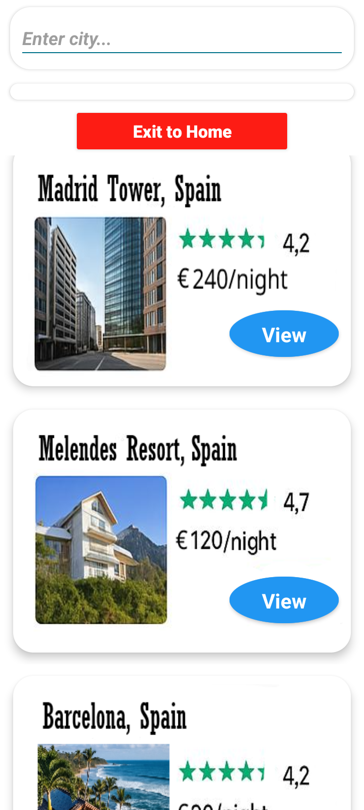
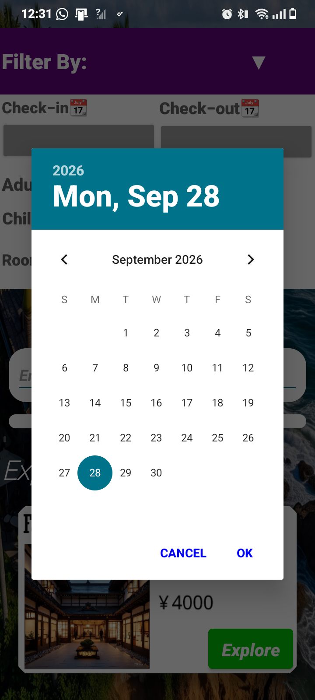

Business software · AnalyticsFeatured
FDS Business Suite
A business operations and intelligence suite bringing everyday workflows, business records, reporting, and AI-assisted insights into one workspace.
I'm Nathaniel Falusi, a software developer interested in building useful digital products across mobile, web, backend systems, and artificial intelligence.
A selection of software products and experiments across business tools, education, AI, and mobile applications.
A business operations and intelligence suite bringing everyday workflows, business records, reporting, and AI-assisted insights into one workspace.
A school library management experience for organizing books, members, loans, and student book requests through a simple interface.
A business data platform concept focused on helping teams organize information, work with operational records, and understand performance through reporting and AI-assisted analysis.
.png)
.png)
An AI-focused creative application concept exploring the generation of visual content from ideas and prompts.
.png)
.png)
A mobile hotel discovery and booking application designed to make exploring accommodation options and planning stays more convenient.




I'm Nathaniel, a developer focused on creating practical software and understanding how the systems behind it work. My interests span mobile application development, backend engineering, API integration, and data-driven products.
I'm also interested in artificial intelligence and how it can be applied to real-world challenges. Over time, I'd like to explore intelligent systems, robotics, and autonomous vehicles more deeply.
Software engineering, AI applications, data systems, and the technologies that connect software with the physical world.
I'm always interested in learning, building, and connecting with people working on useful ideas.
Discord: young_filla